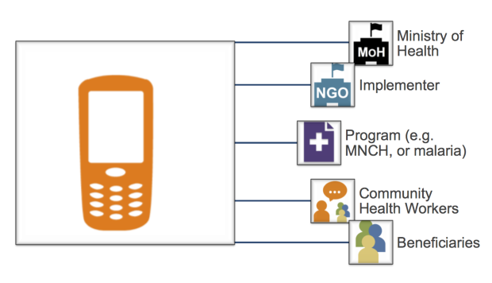
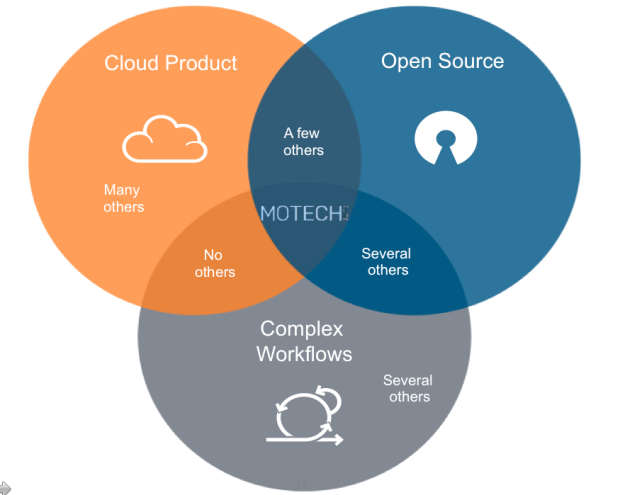

Over the last few years, the question of how to achieve mHealth scale has been commonly discussed by the mHealth community as a major concern for the future of mHealth. A lot has been written about the large number of mHealth projects that haven’t achieved scaled, including articles by our own team.
Through our experience at Dimagi, we’ve found that often times mHealth projects aren’t being scaled correctly. Achieving scale is often talked about in terms of expanding the number of mHealth users (“user scale”) following an mHealth project’s demonstration phase. Furthermore, projects that target a single use case (e.g. maternal health), a single set of users (e.g. community health workers, or CHWs), and a single organization often aren’t as efficient as projects that leverage technology for multiple use cases, organizations, and sets of users.
Instead of focusing only on achieving user scale or implementing projects that are meant for one specific project, the mHealth community should also be focusing on whether we can achieve economies of scale. Many technologies and projects can achieve scale if sufficient funding is applied. However, if economies of scale are not achieved, this will likely result in a bad investment.
As our projects and footprint grows, we’ve been discussing how to achieve these economies of scale both internally and externally with partners. Based on our experience, we’ve identified three paths to scale that are critical to organizations interested in achieving economies of scale:
Path 1: User Expansion
The first and most popular way our community talks about achieving scale is through growing the number of users that are using mobile technology. We call this user expansion. Most mHealth programs to date that have expanded the number of mobile users have a low marginal cost per user. There are several examples of horizontal scale, including three of BBC Media Action’s maternal and child health mobile services (Kilkari, Mobile Kunji, and Mobile Academy) that are scaling nationally in India.
Case study: At Dimagi, we have worked with a number of organizations that achieved scale by adding large numbers of users to their mHealth projects. As part of the USAID DELIVER project, we are working in Tanzania with John Snow International to scale ILSGateway, a logistics and supply chain tool we built on top of CommTrack. Positive pilot results and the fact that adding more users could be done in a cost-effective way (only additional costs came from SMS and training) helped the program decide to scale ILSGateway nationally. As of today, the system is currently being used in in 4,600+ facilities, and is scaling rapidly. [Read the full ISGateway case study].
Path 2: Program Expansion
Another dimension for scale is by adding additional programs to a pre-existing mHealth project. If CHWs are using a mobile solution to support their maternal and child health work, adding an additional TB app would represent program expansion. Economies of scale can be achieved through program expansion when there is low marginal cost per additional use case. In order to achieve this, it’s important that the system is built to be configurable and handle complexity.
Case Study: One example of this is TulaSalud, a Guatemalan NGO whose CHWs are providing healthcare services in Guatemala’s Alta Verapaz region. When Tula first adopted CommCare in 2012, they designed a CommCare application that included a maternal health module to support 200 CHWs in managing high-risk pregnancies. Within a few months of first using CommCare, Tula staff decided to apply mHealth to their malaria and malnutrition programs, and added malaria and malnutrition modules to their CommCare application.By the time Tula decided to add additional modules, they had already invested significantly into establishing their mHealth program, including buying phones, testing CommCare, running pilots, training CHWs to use CommCare, developing their first module, etc. Adding malaria and malnutrition modules required a much smaller level of effort (developing the modules and training CHWs), and enabled the organization to achieve economies of scale through program expansion. [Read the full TulaSalud case study].
Path 3: Vertical Expansion
The third path to achieving economies of scale is through vertical expansion. This requires crossing organizational boundaries to create value through integrated data and workflows. It’s important to note that this path can be very challenging, since initial vertical expansion does not achieve economies of scale but rather requires investing additional resources. It is only after the first round of integration has been established that further economies of scale can be realized through integrating more data across more systems.
Case Study: Unlike building out users and use cases, building a program vertically refers to building mHealth usage beyond your CHWs. One way to vertically expand is by integrating your mHealth project with an external system, such as a database the Ministry of Health uses. Through a Bill & Melinda Gates Foundation-funded project, Dimagi is working with CARE to scale CommCare throughout Bihar, India. As part of this project, Dimagi worked with the Ministry of Health to successfully demonstration CommCare integration with India’s Mother and Child Tracking System (MCTS), India’s national database to track pregnancies and newborns. Although this integration required significant investment upfront, the long-term benefits of this effort are enormous. [Read the full CARE India case study].
Applying different ways to scale
In achieving mHealth scale, it’s important for organizations to think beyond just adding users or designing programs for one specific project. Organizations that are using mHealth should understand these three different paths, even before they have implemented their mHealth pilots. There are already several initiatives underway to help organizations start thinking about different types of scaling. A great set of principals to make sure ICT can achieve economies are listed in the Greentree Consensus. And in developing MOTECH Suite with Grameen Foundation, we are building a platform to enable frontline programs to achieve these economies of scale through different paths of scale.
From a pure technology and product perspective, we are building MOTECH Suite around three key elements (open source, cloud product, and complex workflows) that we believe are are critical to achieve economies of scale, and in turn, strengthen community health programs.

These three three elements coincide with the three different paths towards scale. Cloud products enable organizations to build mHealth projects on their own, giving them the ability to expand users. Complex workflows help FLWs do more than just data collection (e.g. track clients over time, use branching logic, and rules for parsing and responding to messages), which is necessary for program expansion. And open source is a prerequisite for vertical expansion, since it’s required for any program expected to scale nationally and transfer ownership at a much lower cost than proprietary solutions.
So lets say you find yourself in in a conversation about scaling mHealth again. Before you start, make sure to ask those around you what “scale” means to them.